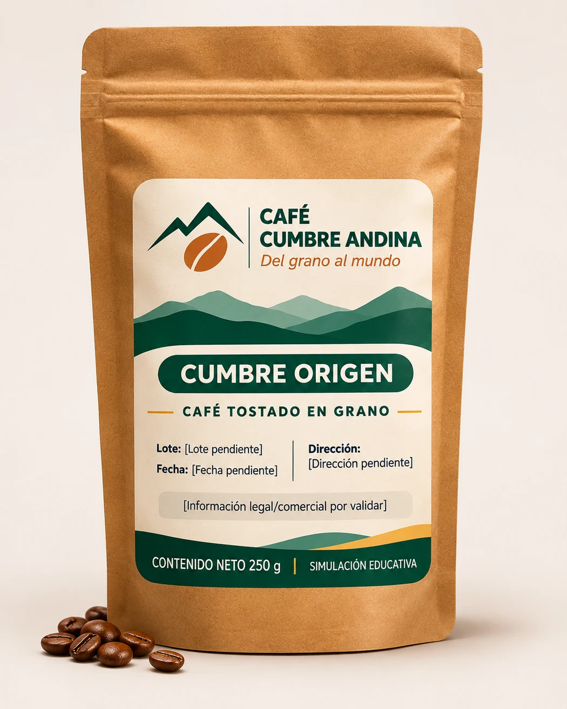
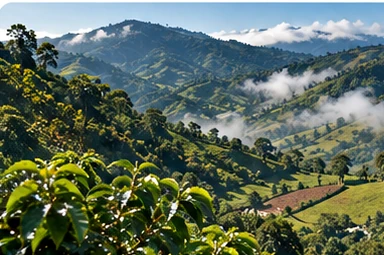
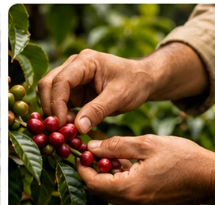
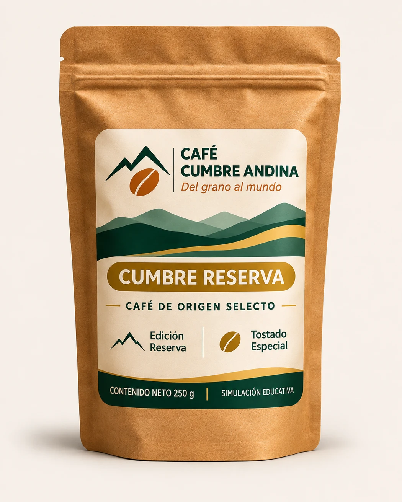
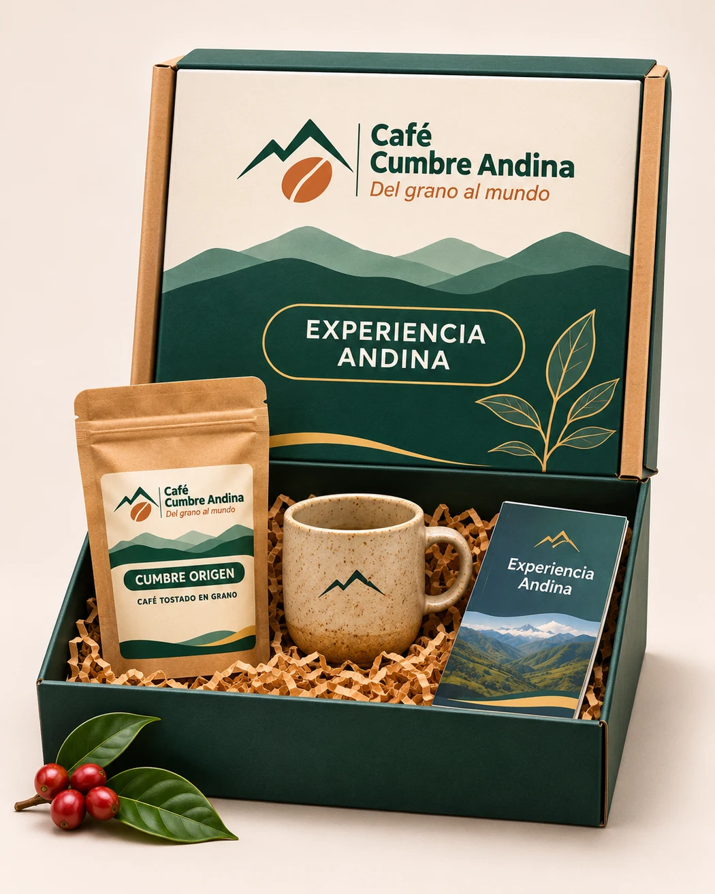
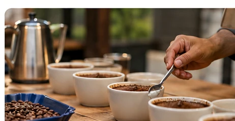

PILOTO PROPUESTO
Café tostado en grano · 250 g
Cumbre Origen
Nuestro primer paso propuesto hacia una línea de café tostado y empacado bajo marca propia.
Una familia cafetera, una historia de origen y una idea que comienza a tomar forma: transformar café verde en una marca propia.



Café Cumbre Andina representa una pequeña empresa familiar de la zona cafetera de Nariño. Durante ocho años ficticios ha trabajado con café verde seleccionado para compradores nacionales.
Hoy exploramos un nuevo camino: colaborar con aliados de tostión, empaque y logística para llevar al mercado un café con identidad propia. La IA nos ayuda a investigar, comparar y preparar decisiones, pero no sustituye la validación humana.
Propuestas visuales para explorar nuevas oportunidades comerciales; ningún producto empacado está actualmente a la venta.
Nuestro primer paso propuesto hacia una línea de café tostado y empacado bajo marca propia.

Un concepto de edición especial cuyo perfil, atributos y precio están pendientes de validar.

Un kit de regalo inspirado en el territorio, todavía en fase de diseño y sin precio comercial confirmado.
¿Qué necesitamos para pasar del café verde a un paquete listo para presentar a potenciales aliados? Este escenario ficticio nos invita a investigar antes de invertir.
Explorar simulador de costosEste lote es únicamente una hipótesis educativa: todavía no se ha fabricado ni vendido.
Organizar información nos permite explorar la cadena productiva antes de contratar o comprometer recursos.
Café verde seleccionado
Aliado especializado externo
Bolsas y etiquetas
Distribución nacional por validar
Oportunidades por explorar

Simula cantidades, costos, precios y alternativas de proveedores. Verás cómo el conocimiento de una pequeña empresa puede convertirse en una herramienta digital interactiva.
Abrir aplicación de costosEste proyecto utiliza datos simulados para enseñar posibilidades y límites de la IA aplicada a pequeños negocios.
No. Café Cumbre Andina es una marca ficticia creada para formación y el lote de café empacado solo está propuesto.
No. La internacionalización es una posibilidad que requeriría verificar normas, mercado, costos y capacidades.
No. El caso estudia contratar un servicio de tostión externo para el piloto.
No. No hay certificaciones, premios ni puntajes oficiales verificados y no se atribuyen a la marca.
Conoce el caso, prueba el simulador y lleva estas ideas a los procesos de tu propia empresa.